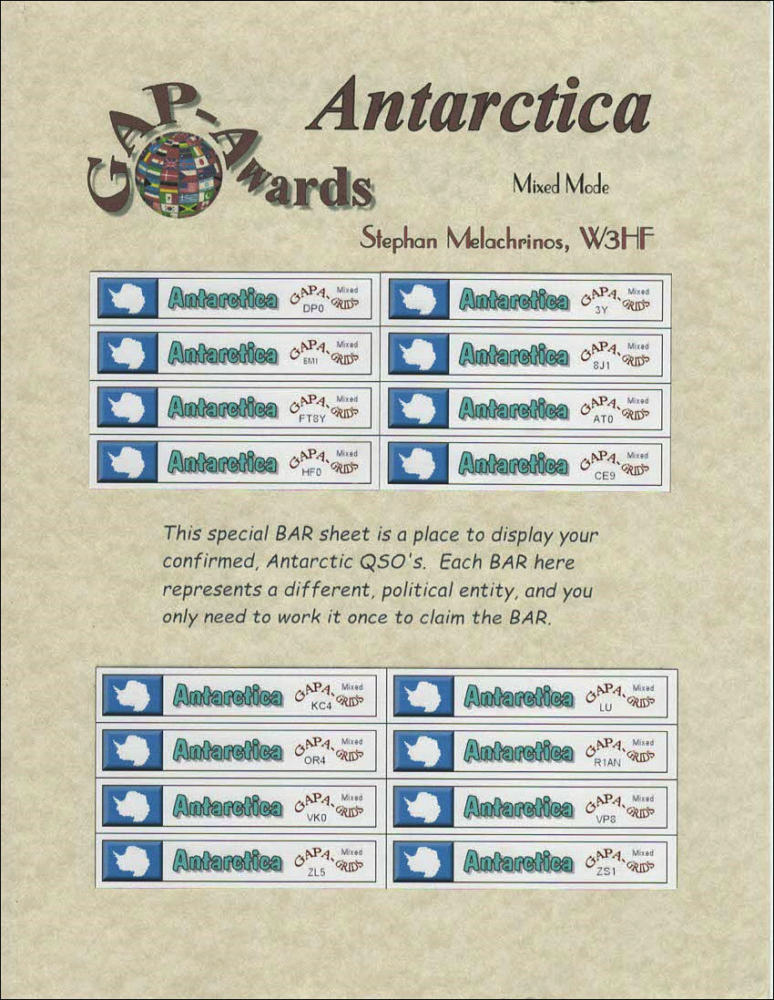

| GAP Awards Paper Certificates Family Tree |
| Index | Grid Index |
| This very
distinctive Antarctic Award is a Collators must.
|
|  |
| You can claim this collectors
sheet after your first confirmed stamp. This is a must for the Digital Grid Collector, but remember that this award is for collecting Political Entities. The Digital Antarctic Award. It is not easy to collect but you can claim each individual confirmed QSO. You will also be eligible to claim a special DX Antarctic BAR which counts towards your DX totals. |